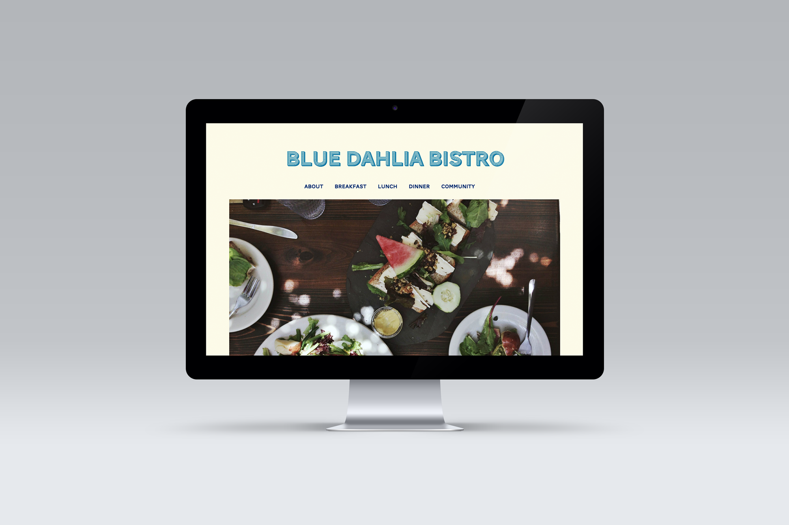
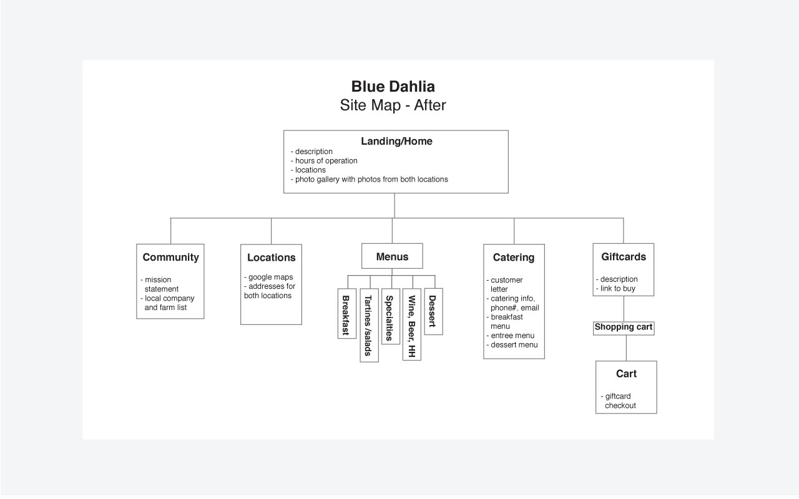
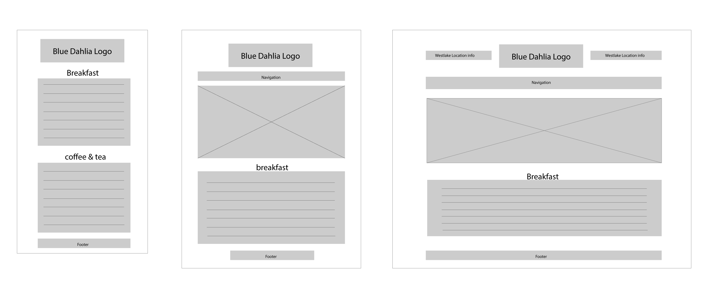
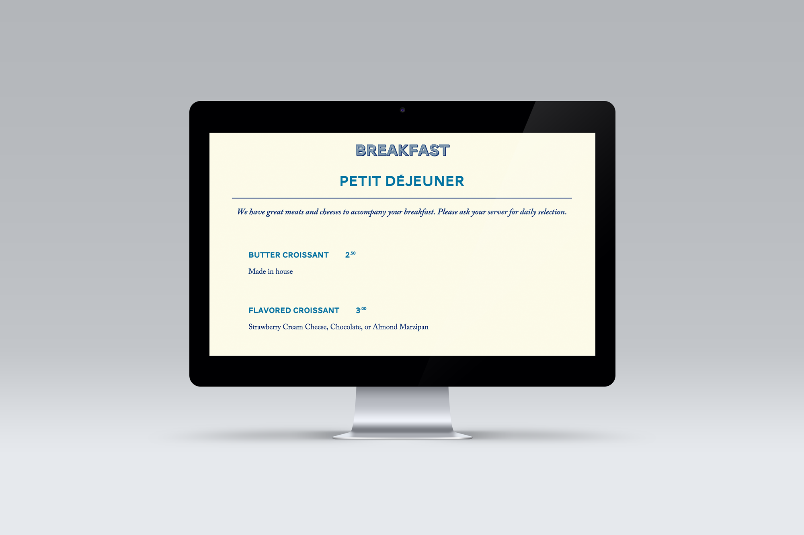
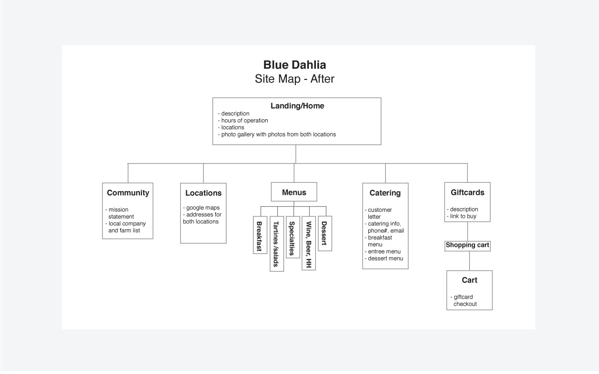
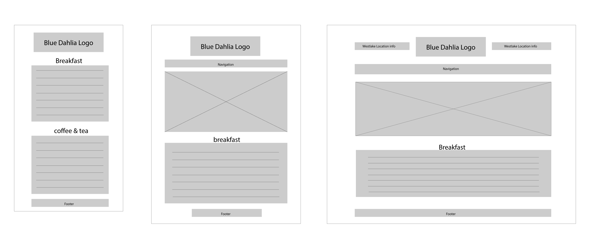

 
Project Brief
I love happy hours at Blue Dahlia! They have one of the best patios in town. Their current website doesn't reflect what a cool restaurant it is. My goal was to make the website more inviting and modern.
Tools Used
HTML/CSS, Sass, Typekit, Responsive Web Design, Photoshop
Process
I conducted user interviews, did competitor research, S.W.O.T analysis and made word lists, sketches, site maps, style tiles, wireframes, and full color comps. My full design process is documented in the Style Guide.
 